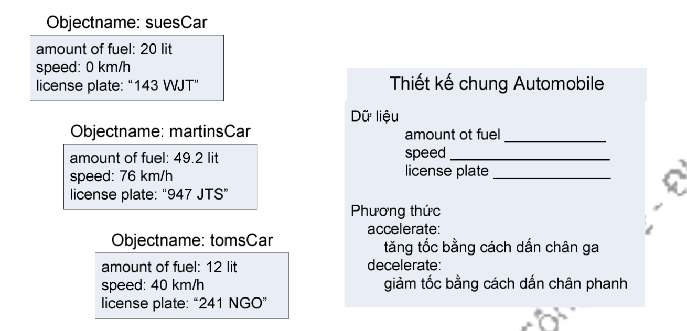
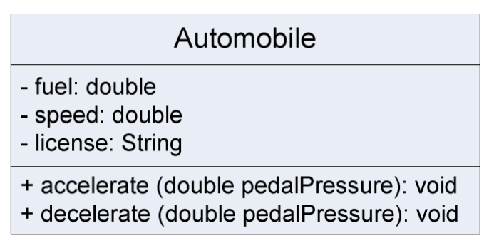

Gần như bất cứ thứ gì cũng có thể được mô hình hóa bằng một đối tượng. Chẳng hạn, một màu, một hình vẽ, một cái nhiệt kế.
Mỗi đối tượng có một tập các thuộc tính (attribute) như các giá trị hay trạng thái để mô hình hóa đối tượng đó. Chẳng hạn, một cái nhiệt kế có thể có thuộc tính là vị trí hiện tại của nó và trạng thái hiện tại tắt hay bật, các thuộc tính một màu có thể là giá trị của ba thành phần RGB của nó. Một cái ô tô có các thuộc tính như: lượng xăng hiện có, tốc độ hiện tại, biển số.
Mỗi đối tượng có một tập các trách nhiệm mà nó thực hiện bằng cách cung cấp dịch vụ cho các đối tượng khác. Các dịch vụ này có thể cho phép truy vấn thông tin hoặc làm thay đổi trạng thái của đối tượng. Ví dụ, nhiệt kế cho phép truy vấn về tình trạng tắt/bật của nó; đáp ứng các yêu cầu về nhiệt độ hiện hành mà nó đo được, yêu cầu tắt/bật. Một cái ô tô cho phép tăng ga, giảm ga để tăng/giảm tốc độ di chuyển. Đối với thiết kế tốt, các đối tượng bên ngoài không phải quan tâm xem một đối tượng nào đó cài đặt một dịch vụ như thế nào, mà chỉ cần biết đối tượng đó cung cấp những dịch vụ nào (hay nó có những trách nhiệm gì). Chẳng hạn, người lái xe không cần biết cơ chế chuyển đổi từ lực nhấn lên chân đạp ga sang sự thay đổi về tốc độ của ô tô.
Hình 1.1: Các đối tượng ô tô và đặc điểm chung của chúng.
Trong mỗi ứng dụng, các đối tượng có đặc điểm tương tự nhau, chẳng hạn các tài khoản ngân hàng, các sinh viên, các máy ATM, những chiếc ô tô được xếp vào cùng một nhóm, đó là lớp (class). Mỗi lớp là đặc tả các đặc điểm của các đối tượng thuộc lớp đó. Cụ thể, một định nghĩa lớp mô tả tất cả các thuộc tính của các đối tượng thành viên của lớp đó và các phương thức thực thi hành vi của các đối tượng đó. Ví dụ, ta có thể có nhiều đối tượng ô tô với thông số khác nhau về lượng xăng hiện có, tốc độ hiện tại, và biển số xe; định nghĩa lớp ô tô mô tả đặc điểm chung của các thông số đó cùng với các phương thức thực hiện các hoạt động tăng tốc, giảm tốc.
Hình 1.2: Lớp Automobile vẽ bằng kí pháp UML
Quan hệ giữa lớp và đối tượng gần giống như quan hệ giữa kiểu dữ liệu và các biến thuộc kiểu dữ liệu đó. Các đối tượng được tạo ra khi chương trình chạy, và lớp là khuôn mẫu mà từ đó có thể tạo ra các đối tượng thuộc lớp đó. Mỗi đối tượng được tạo ra từ một lớp được gọi là một thực thể (instance) của lớp đó. Một chương trình khi được viết là sự kết hợp của các lớp khác nhau. Còn khi chạy, nó là một tập hợp các đối tượng hoạt động và tương tác với nhau, các đối tượng này được sinh ra từ các lớp cấu thành nên chương trình đó.
Mỗi đối tượng đều có một thời gian sống. Trong khi chương trình chạy, đối tượng được tạo và khởi tạo giá trị theo yêu cầu. Ngay khi một đối tượng được tạo ra, hệ thống tự động gọi một hàm khởi tạo (constructor) để khởi tạo giá trị cho các thuộc tính của đối tượng. Kể từ đó, đối tượng bắt đầu tồn tại, nó gửi và nhận các thông điệp, và cuối cùng thì nó bị hủy đi khi không còn cần đến nữa. Trong khi đối tượng tồn tại, nó giữ định danh và trạng thái của mình. Mỗi đối tượng có một định danh riêng và có bộ thuộc tính riêng, độc lập với các đối tượng khác thuộc cùng một lớp. Trong thực tế, mỗi đối tượng có vị trí riêng trong bộ nhớ.
Các đối tượng dùng các thông điệp (message) để liên lạc với nhau. Nhìn từ phương diện lập trình, việc gửi một thông điệp tới một đối tượng chính là gọi một phương thức của đối tượng đó, còn việc một đối tượng nhận được một thông điệp chính là việc một phương thức của nó được một đối tượng khác gọi. Chương trình khi chạy là một tập các đối tượng, mỗi đối tượng gửi thông điệp cho các đối tượng khác trong hệ thống và đáp ứng các thông điệp mà mình nhận được. Thông thường, một thông điệp được gửi bằng một lời gọi phương thức trong chương trình. Tuy nhiên, các thông điệp có thể xuất phát từ hệ điều hành hoặc môi trường chạy chương trình. Chẳng hạn khi người dùng click chuột vào một nút bấm tại một cửa sổ chương trình, một thông điệp sẽ được gửi đến đối tượng điều khiển nút bấm đó thông báo rằng cái nút đó đã bị nhấn.